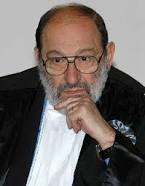

De Eco, temprana y ampliamente editado al español en otras latitudes, Criterios tradujo y logró publicar, en pleno Quinquenio Gris, la unidad “Retórica e ideología” of La estructura ausente (La Gaceta de Cuba, nº 111, April 1973), reproducida en 1986 in Textos y Contextos: Una ojeada en la teoría literaria mundial, t. I, Art and literature), as well as, years later, su estudio “Perspectivas de una semiótica de las artes visuales” (Criterios, nº 25-28, enero-diciembre 1990).
Con él tuve el placer de coincidir en un Congreso internacional de Semiótica celebrado en A Coruña, in 1999, e intercambiar algunas palabras –más sobre Cuba que sobre esa disciplina— bajo su jovial pero inquisitiva mirada profesoral. Su conferencia magistral fue toda una impresionante performance intelectual.
Como en el caso de Lotman –a quien él divulgó en Italia–, la muerte no ha interrumpido la vida de un jubilado, sino la de un intelecto siempre en plena efervescencia productiva.
Desiderio Navarro, Havana, 20 February's 2016.
Muere Umberto Eco
El escritor y filósofo italiano ha fallecido a los 84 years,según informa el diario ‘La Repubblica’.
To the 84 years, y sin perder en ningún momento la curiosidad crítica, murió anoche en Milán el escritor, filósofo y semiólogo italiano Umberto Eco. La noticia fue comunicada al diario italiano La Repubblica por la familia. Falleció a las 22.30 en su casa. El autor de obras imprescindibles como El nombre de la rosa, in 1980, o El péndulo de Foucault, in 1988, había nacido en Alessandria el 5 in January of 1932. La última de las obras de su fecunda carrera como autor de novelas de éxito y ensayos de semiótica, estética medieval o filosofía, was Número cero, una mirada crítica del gran experto de la comunicación sobre una crisis del periodismo que, advertía, empezó “en los cincuenta y sesenta, justo cuando llegó la televisión”.
“Hasta entonces”, contaba en una entrevista de Juan Cruz publicada por EL PAÍS en marzo de 2015, “el periódico te contaba lo que pasaba la tarde anterior, por eso muchos se llamaban diarios de la tarde: Corriere della Sera, Le Soir, La Tarde, Evening Standard… Desde la invención de la televisión, el periódico te dice por la mañana lo que tú ya sabías. Y ahora pasa igual. ¿Qué debe hacer un diario?”. Esa era la duda —la curiosidad vestida de pesimismo— que lo llevó a publicar su último libro y a mantener su mirada despierta hacia todo lo que ocurría a su alrededor.
La trama de Número cero está ambientada en 1992, un año clave de la historia italiana por el caso Tangentópolis, y se desarrolla en la redacción de un periódico en ciernes donde confluyen la logia masónica P2, las Brigadas Rojas, el fin de una era y la aparición de otra —con Silvio Berlusconi a punto de saltar al escenario— que desvaneció muchas esperanzas hasta convertirse en la Italia desorientada de hoy. Todo ello lo miró, lo analizó y lo escribió Eco.
Tras difundir la noticia de su fallecimiento —pocas veces la expresión Italia está de luto ha tenido tanto sentido—, el diario La Repubblica escribió en su web un titular que resume muy bien la personalidad de Eco y el respeto, casi unánime, que despertaba en Italia: “Muere Umberto Eco, el hombre que lo sabía todo”. Como destacaba Il Corriere della Sera, Eco ha sido una presencia constante e imprescindible de la vida cultural italiana del último medio siglo, pero su fama, a nivel mundial, se debe al extraordinario éxito de El nombre de la rosa, del que se vendieron millones de copias en todo el mundo. “Recorrer la vida y la carrera de Umberto Eco”, explica el diario de Milán, “significa también reconstruir un pedazo importante de nuestra historia cultural”.
La vida académica de Eco se inició en 1954 en Turín. Aquel año se doctoró en Filosofía, pero también participó en un concurso de la RAI —la televisión pública italiana— en el que venció y que lo convirtió en compañero del periodista Furio Colombo y del filósofo Gianni Vattimo en una aventura de complicidades siempre ligada al mundo de la cultura. En los sesenta trabajó como profesor agregado de Estética en las universidades de Turín y Milán y participó en el Grupo 63 publicando ensayos sobre arte contemporáneo, cultura de masas y medios de comunicación. Entre estos ensayos los más conocidos son Apocalípticos e integrados and Opera aperta. El semiólogo milanés también fue catedrático de Filosofía en la Universidad de Bolonia, donde puso en marcha la Escuela Superior de Estudios Humanísticos, conocida como la Superescuela, porque su objetivo es difundir la cultura internacional entre licenciados con un alto nivel de conocimientos. También fundó la Asociación Nacional de Semiótica.
Entre sus innumerables premios está el Príncipe de Asturias de Comunicación y Humanidades del 2000. Inquieto hasta el fin, acababa de lanzar una nueva editorial, La Nave de Teseo.
En un discurso en la Universidad de Turín, Eco aplicó su mirada crítica –no todo es positivo ni negativo en su totalidad—a las redes sociales: “El fenómeno de Twitter es por una parte positivo, pensemos en China o en Erdogan. Hay quien llega a sostener que Auschwitz no habría sido posible con Internet, porque la noticia se habría difundido viralmente. Pero por otra parte da derecho de palabra a legiones de imbéciles”.
“La verdadera educación quizás ya no sea dar más información, sino enseñar a elegir”,
Umberto Eco, 22 of June of 1994
Umberto Eco
(Alessandria, Piamonte, 1932) Semiólogo y escritor italiano. Se doctoró en Filosofía en la Universidad de Turín, con L. Pareyson. Su tesis versó sobre El problema estético en Santo Tomás (1956), y su interés por la filosofía tomista y la cultura medieval se hace más o menos presente en toda su obra, hasta emerger de manera explícita en su novela El nombre de la rosa (1980). From 1971 ejerce su labor docente en la Universidad de Bolonia, donde ostenta la cátedra de Semiótica.
Se pueden definir dos presupuestos clave en la amplia producción del autor: en primer lugar, el convencimiento de que todo concepto filosófico, toda expresión artística y toda manifestación cultural, de cualquier tipo que sean, deben situarse en su ámbito histórico; y en segundo lugar, la necesidad de un método de análisis único, basado en la teoría semiótica, que permita interpretar cualquier fenómeno cultural como un acto de comunicación regido por códigos y, por lo tanto, al margen de cualquier interpretación idealista o metafísica.
Teniendo en cuenta este planteamiento, se puede comprender el porqué de la variedad de los aspectos analizados por Umberto Eco, que abarcan desde la producción artística de vanguardia, como en Obra abierta (1962), hasta la cultura de masas, como en Apocalípticos e integrados (1964) or in El superhombre de masas (1976).
A la sistematización de la teoría semiótica dedicó, above all, the Tratado de semiótica general (1975), publicado casi al mismo tiempo en Estados Unidos con el título de A Theory of Semiotics, obra en la que el autor elabora una teoría de los códigos y una tipología de los modos de producción sígnica.
Durante los años del auge del estructuralismo, Eco escribió, enfrentándose a una concepción ontológica de la estructura de los fenómenos naturales y culturales, La estructura ausente (1968), que alcanza su óptima continuación en Lector in fabula (1979). En esta última obra, efectivamente, se afirma que la comprensión y el análisis de un texto dependen de la cooperación interpretativa entre el autor y el lector, y no de la preparación y de la determinación de unas estructuras subyacentes, fijadas de una vez por todas.
Algunos conceptos básicos del Tratado, on the other hand, fueron estudiados nuevamente, discutidos y, en ocasiones, modificados por el propio autor en una serie de artículos escritos para la Enciclopedia Einaudi y recogidos después en Semiótica y filosofía del lenguaje (1984). El concepto de signo, especially, abandonando el modelo propio “de diccionario” por un modelo “de enciclopedia”, ya no aparece como el resultado de una equivalencia fija, establecida por el código, entre expresión y contenido, sino fruto de la inferencia, i.e., de la dinámica de las semiosis.
A estas obras teóricas se añaden los volúmenes en los que Umberto Eco ha reunido escritos de circunstancia y artículos de actualidad, tales como Diario mínimo (1963), que contiene los conocidos Elogio di Franti and Fenomenologia di Mike Bongiorno; Il costume di casa (1973); Dalla periferia dell’impero (1976) and Sette anni di desiderio (1983).
In 1980 dio a conocer la novela El nombre de la rosa, antes citada, de ambientación medieval e inspirada en el subgénero policiaco, en cuyas páginas se combinan a la perfección todos los temas teóricos de la obra de Eco, con una adecuada reconstrucción histórica como escenario de una imaginativa trama y de un sólido arte narrativo.
Se trata de un denso relato que transcurre en una abadía medieval italiana y donde, con una estructura similar a la de las novelas policiacas, el protagonista, un fraile inglés llamado Guillermo de Baskerville, indaga en una serie de asesinatos y llega a descubrir al autor y a los inductores de todos ellos.
Este largo relato, escrito bajo la advocación de J. L. Borges (convertido en el bibliotecario ciego de la narración), es un genial pastiche de diversas formas literarias: la novela negra, el género histórico, la imitación de estilos medievales o humorísticos de la historieta contemporánea. Gran parte del éxito de la obra, que se convirtió en un best-seller europeo, reside en la perfección de la escritura, que mezcla con habilidad las citas con los materiales originales, dando forma a un paradójico catálogo de la posmodernidad, en la que cualquier creación nace del sentimiento, según Eco, de que “todo ya ha sido dicho y escrito”.
El péndulo de Foucault (1988), el segundo relato del autor, intentó recrear la tradición hermética, ocultista y masónica como metáfora de la irracionalidad superviviente en los contemporáneos movimientos terroristas y en las mafias económicas. Aunque también traducido y vendido en todo el mundo, no gozó del favor de los críticos y los lectores. Como tampoco despertó juicios favorables La isla del día antes (1994), su última novela publicada. En mayo de 2000 fue galardonado con el Premio Príncipe de Asturias.


Recent Comments